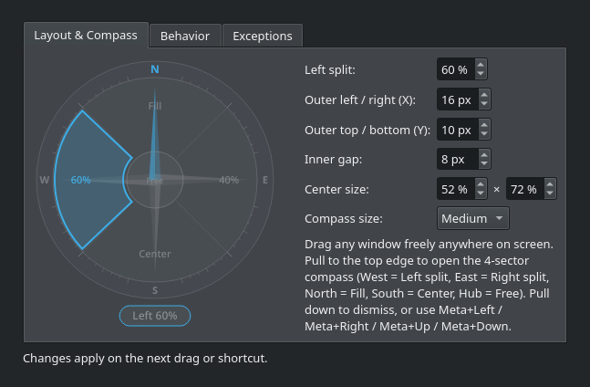

pafta
Top-edge compass picker, Meta+Arrow tiling, and per-app window memory. A KWin script for KDE Plasma 6.
How it works
- Free drag stays free. Dragging anywhere on screen shows nothing; mini windows move without interruption.
- Top-edge compass. Pull any window to the top edge of the monitor (full width) to open the 4-sector compass right above your cursor: West Left 60%, East Right 40%, North Fill, South Center, Hub Free. Pull down to dismiss.
- Meta+Arrow shortcuts.
Meta+UpFill,Meta+LeftLeft split,Meta+RightRight split,Meta+DownCenter. - Asymmetric padding. Independent Left/Right outer padding, Top/Bottom outer padding, and Inner gap — using own
frameGeometrywithout touching PlasmaMeta+Ttiles. - Window memory. Saves every move, resize, slot, and maximize state immediately and restores synchronously on Wayland when the app reopens.
Settings
System Settings → Window Management → KWin Scripts → pafta → configure. Changes apply on the next drag or shortcut.

Install
KDE Plasma 6. Developed and tested on Plasma 6.8 (Wayland).
git clone https://github.com/to1un/pafta kpackagetool6 --type=KWin/Script --install pafta/package
Enable pafta in KWin Scripts and press Apply. Updating and uninstalling are in the README.